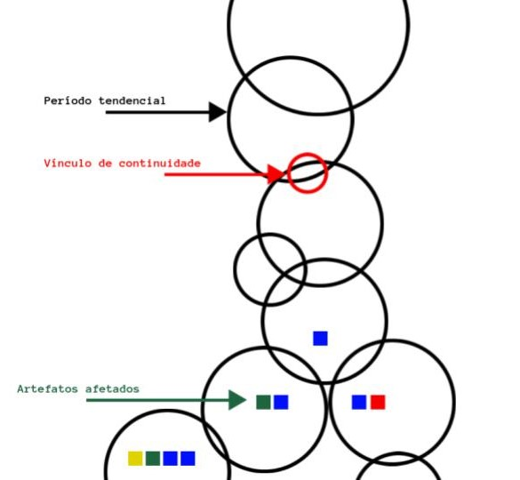

Problemática
- Necessidade de entendimento lógico sobre tendências e períodos que as mesmas perpetuam;
- Necessidade de criar métricas para distinguir mudanças entre períodos de tendências;
- Necessidade de criar métricas para obter ciência de gatilhos ocasionadores de mudanças entre períodos de tendências;
- Necessidade de criar métricas cronológicas para períodos de tendências, também para períodos ocasionadores de mudanças de tendências;
- Necessidade de obter ciência dos artefatos envolvidos e afetados em períodos de tendências, e transformações dos mesmos sob tais períodos;
- Necessidade de criar métricas comparativas entre períodos de tendências;
- Necessidade de criar métricas comparativas entre períodos ocasionadores de mudanças de tendências;
- Necessidade de criar métricas comparativas entre artefatos envolvidos em períodos de tendências;
- Necessidade de entendimento lógico e cronológico de períodos de tendências;
- Necessidade de entendimento do ciclo de vida e cronologia de artefatos envolvidos em períodos de tendências.
Construção do pensamento teórico
Quando nasce uma nova tendência, há transformação
Não simplesmente nasce uma nova tendência
Nasce todo um ecossistema que há envolve
Há quem concorde e a siga
Há quem discorde e a condena
Com isso, nascem
Grupos de quem a siga
Grupos de quem a condena
Movimentos manifestativos de quem há siga
Movimentos manifestativos de quem há condena
E, nos grupos de quem há condena
Nasce uma nova tendência.
Características

Observação: Todo período tendencial possui artefatos afetados. No modelo visual representativo acima, foram desenhados somente alguns artefatos afetados, em alguns períodos tendenciais, a fim de melhorar a visibilidade do modelo visual representativo e entendimento do leitor.
- O ordenamento da evolução cronológica, no modelo visual representativo, é de cima (passado) para baixo (presente/futuro);
- Cada período tendencial possui pelo menos um vínculo de continuidade (ciclo contínuo - evolução contínua), elo de ligação/relação entre fim de período tendecial antecessor e início de período tendencial sucessor;
- Novos períodos tendenciais originados são, tecnicamente, compostos de variantes inspiradas/herdadas das antecessoras;
- O conhecimento de períodos tendenciais antigos ocorre por meio do caminho reverso até a origem/alvo, percorrendo/conhecendo os períodos tendenciais antecessores;
- Todo novo período tendencial é baseado em outro por meio de seu vínculo de continuidade, advindo do contato/conhecimento do antecessor;
- No vínculo de continuidade acontece a revolução, através de movimento manifestativo (gatilho de continuidade/necessidade que se tranforma em ato) que, consequentemente, originará novo(s) período(s) tendencial(is);
- O movimento manifestativo pode ser material, não material (sendo considerado representação abstrata de revolução);
- Artefatos afetados podem deixar de existir. Mas as características de tais artefatos podem continuar existindo, presentes em novos artefatos afetados em novos períodos tendenciais;
- Cada período tendencial possui ciclo de vida, composto de início e fim. O início é declarado quando a ação em um vínculo de continuidade se concretiza, e o fim é dado quando uma nova ação (revolução) em um novo vínculo de continuidade é criada.
Observações e medições
- Teoria refere-se de como os artefatos, presentes nos períodos tendenciais, são afetados sob os mesmos;
- Modelo visual representativo baseado em linha de DNA ("DNA temporal" - hereditariedade e evolução);
- Círculos são somente representações visuais abstratas, para representar a delimitação do tempo de durabilidade do período tendencial em questão;
- A unidade de medida utilizada para determinar a exata durabilidade dos períodos tendenciais e vínculos de continuidade varia, conforme estudo de caso utilizado (minutos, horas, meses, anos, décadas, etc);
- Grau do período tendencial (tamanho): Se dá por meio do tempo de durabilidade em que não há hereditariedade sucessora, visualmente representada pelo tamanho do círculo;
- Grau do vínculo de continuidade (tamanho/quantidade): Se dá por quantidade de características herdadas do período tendencial antecessor, visualmente representada pelo tamanho de abertura do vínculo;
- Grau do artefato afetado (quantidade): Se dá por quantidade de artefatos afetados pelo período tendencial. Pode-se medir, comparativamente, o tamanho/abrangência/proporção de artefatos afetados, dentro de mesmo período tendencial, pela quantidade dos mesmos, com mesmas características, representadas visualmente (não há critérios estabelecidos para tal).
Realidades tendenciais paralelas
- O modelo representativo visual possibilita a existência de vários períodos tendenciais paralelos, perpetuando ao mesmo tempo (realidades tendenciais paralelas), providos de bifurcação em período tendencial antecessor. Os artefatos afetados existem, ao mesmo tempo, em seus devidos períodos tendenciais, e podem ser relacionados quando tais períodos tendenciais unirem-se novamente, em novo período tendencial;
- Nesse contexto, os artefatos afetados em um período tendencial podem ser referenciados como os mesmos em outros períodos tendenciais paralelos. Essas definições ficarão a critério de quem está aplicando tais contextos no modelo representativo visual, conforme ponto de vista do mesmo e estudo de caso;
- No cenário em que há existência de períodos tendenciais paralelos, perpetuando ao mesmo tempo, a existência da bifurcação e perpetuação dos mesmos pode ser considerada como diferentes formas de visão da realidade tendencial, sendo essa advinda do estudo de caso e opinião/ponto de vista de quem está aplicando o modelo representativo visual.
Aplicabilidade
- Artefatos afetados;
- Materiais;
- Evolução do telefone;
- Evolução do automóvel;
- Evolução na construção civil;
- Evolução/tendências de mercado;
- Evolução das tendências de vestuários ("moda");
- Não materiais;
- Evolução do pensamento liberal (gostos, aceitações, opiniões, preconceitos);
- Evolução de ideologias políticas;
- Evolução das tradições culturais;
- Evolução do clima;
- Evolução dos gostos musicais;
- As características dos artefatos afetados também podem ser materiais ou não materiais;
- Evolução = diversificação. Geralmente há maior diversificação de artefatos afetados em períodos tendenciais sucessores, do que em períodos tendenciais antecessores;
- Seres humanos são artefatos afetados pelos períodos tendenciais. Em determinadas situações, somos obrigados a vivenciá-los por necessidade (adaptação).
Exemplo prático: evolução do telefone
Meados dos anos 2000 (período tendencial) havia o telefone fixo (artefato afetado). O telefone fixo possuía características de uso em locais limitados, por depender de fio para funcionamento. Houve, por parte das pessoas, necessidade (gatilho de continuidade) de otimizar o telefone, possibilitando-o utilizar em qualquer local. Tal necessidade gerou movimento revolucionário (vínculo de continuidade) das pessoas desejar e empresas desenvolver o telefone móvel (meados de 2005), que tinha como características a ausência do fio e a possibilidade de utilizá-lo em qualquer lugar. O telefone móvel fora desenvolvido e comercializado, onde as pessoas o utilizavam em seu cotidiano (novo período tendencial). O telefone fixo não deixou de existir, mas foi utilizado com menos proporções do que o telefone móvel.
Gatilhos de continuidade
O que promove o vínculo de continuidade e, consequentemente, sucessão de períodos tendenciais?
- Novos períodos tendenciais surgem a partir de necessidades - gatilhos de continuidade, que originarão representação(ões) manifestativa(s) e que, consequentemente, formam vínculo de continuidade;
- Ocorrem via representação(ões) manifestativa(s) ("revolução", indiferente de grau - revolução 'em nós mesmos' ou que possa englobar o mundo todo), sendo essa(s) advinda(s) de uma das necessidades abaixo:
- Aceitação, adaptação/otimização do período tendencial em questão;
- Ocasiona criação de período tendencial, onde há criação/atualização das características e/dos artefatos afetados, por consequência de intemperismo temporal/tendencial (o tempo passa e tudo evolui/transforma-se). Os artefatos afetados criados tendem a possuir maioria das características idênticas a dos artefatos afetados antecessores, além das novas geradas;
- Não aceitação, criticidade/alternativa para criação de nova tendência;
- Ocasiona criação de período tendencial, onde há criação de novos artefatos afetados, geralmente com características e graus diferentes, em maioria, dos artefatos afetados antecessores, mesmo sendo, esses novos artefatos, baseados nesses antecessores;
Visão panorâmica do modelo visual representativo
- Modelo visual representativo possui aplicabilidade para observação e relação do passado/presente;
- O modelo visual representativo pode ser utilizado para observação e relação do presente/futuro?
- Sim, há aplicabilidade existente em algoritmos de IA, como árvores de decisão (Random Forest), utilizados em tecnologias como Xbox Kinect;
- Garante maior previsibilidade assertiva, baseada em fatos/características/comparações entre vínculos e períodos tendenciais, aplicados e ocasionando possíves futuros artefatos afetados, juntamente com suas respectivas características.
Conclusões
- Possibilidade de observar/discernir a maneira como os artefatos afetados reagem/transformam-se a determinadas tendências ao longo dos períodos de durabilidade das mesmas. Além disso, possibilita observação comparativa entre artefatos afetados, em mesmo período tendencial ou entre diferentes períodos tendenciais;
- Possibilita observar/discernir o movimento manifestativo (gatilho de continuidade - necessidade) que gera vínculo de continuidade e, consequentemente, criação de novo(s) período(s) tendencial(is). Em mesma lógica, a causa que delimita o fim de um período tendencial;
- Promove estudo de relação, visualmente representativa, entre períodos tendenciais, seus vínculos de continuidade e gatilhos de continuidade, e artefatos afetados envolvidos;
- Promove estudo analítico quantitativo (graus) de períodos tendenciais, vínculos de continuidade e artefatos envolvidos;
- Modelo visual representativo promove embasamento para aplicabilidade prática em outros modelos visuais representativos, de diferentes cenários, como IA (algoritmos de árvore de decisão, como Random Forest), teorias em geral (teoria do caos) e árvores genealógicas;
- Promove estudo de relação para entendimento/comparação de vínculos entre passado/presente/futuro e características de cada época temporal em questão (durabilidade, artefatos afetados, gatilhos de continuidade e vínculos de continuidade presentes em cada época).